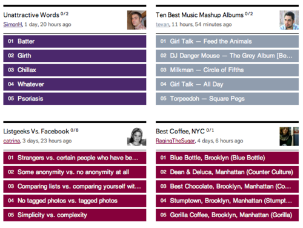

Sun, 27 Mar 2011 10:00:00 · listgeeks · sns · geeks
for those who loves to create a list of anything

For those who loves to create a list of anything, try out ListGeeks - In a nutshell, it’s a social network (yes, another one of those thing), where people can create and share lists of things that matter to them.